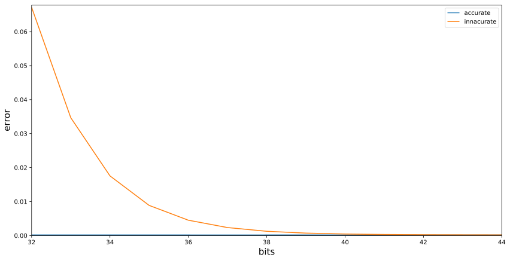

Range encoders are a type of entropy encoder used in modern day data compressors. They're an
evolution of earlier entropy encoders (most notably Huffman encoding) which were restricted to
encoding data as a whole number of bits. Range encoding, by contrast, allows us to encode in
fractions of a bit and thus achieve compression ratios very close to optimal.
Note that in order to compress data, an entropy encoder needs to be paired with a model to predict
what data will appear next. The better the model, the better the compression. Since this article is
meant to explain range encoding, the model we use will be kept simple.
Implementation
We provide two implementations of our range encoder: RangeEncoder.py
in python, and range_c99.zip in C. Both implementations are similar in
layout and produce identical outputs. When called from the command line, they will use an adaptive
order-0 model to compress or decompress a file.
And below are our results from compressing the calgary corpus.
Indeed, our compression ratios are on par with similarly equipped range/arithmetic encoders.
File
Original Size
Compressed Size
% Smaller
bib
111,261
72,730
34%
book1
768,771
435,870
43%
book2
610,856
360,136
41%
geo
102,400
72,629
29%
news
377,109
241,538
35%
obj1
21,504
15,174
29%
obj2
246,814
180,750
26%
paper1
53,161
32,524
38%
paper2
82,199
47,340
42%
pic
513,216
70,021
86%
progc
39,611
25,513
35%
progl
71,646
41,833
41%
progp
49,379
29,604
40%
trans
93,695
62,856
32%
=
3,141,622
1,688,518
46%
Proof of Concept
When learning about range encoding, the overall concept can be eclipsed by all of the details that a
practical implementation demands. In truth, range encoders are based off of the fairly simple
concept of scaling one interval to fit inside another. Thus, we'll use this first section to go over
an example of encoding and decoding a message with a simplified range encoder in order to explain
the idea behind it. In the next section, we'll go over our real-world implementation.
Our end goal with a range encoder is to turn a sequence of intervals into a number in the interval
[0,1). When we give someone else this number, they will be able to determine what interval was
encoded at each step. By mapping these intervals to symbols (ex: letters, numbers, bytes, etc) we
can encode and decode a sequence of symbols.
There are many intervals we can choose to encode a message, but because our goal is data
compression, our intervals will actually be chosen by the probability of each symbol. For instance,
assume our message will only be composed of the symbols A, B, C, and D, and we already know their
probabilities of occurring in a message, which are given below.
Symbol
Probability
A
0.20
B
0.10
C
0.25
D
0.45
To derive the intervals for this set of symbols, we'll first visualize them as lines whose heights
are equal to their symbol's probability
Next, we'll stack the lines that we've drawn and add their heights.
This line from 0 to 1 represents the intervals we'll be mapping to each symbol, and it will form the
backbone of our encoding and decoding endeavors. Particular to each symbol are the values
immediately above and below it. For future reference, we'll call the value above each symbol the
'high' value, and the value below each symbol the 'low' value. Written out, they would be
Name
Value
Name
Value
Dlow
0.55
Dhigh
1.00
Clow
0.30
Chigh
0.55
Blow
0.20
Bhigh
0.30
Alow
0.00
Ahigh
0.20
We will say that a value x is in a symbol's interval if Slow≤x<Shigh for some symbol S. Note that by
defining the intervals this way, there are no overlaps or gaps between symbols. That is, if x is in
A's interval, it can't also be in B's interval. And if 0≤x<1, then it has to be in some symbol's
interval.
Our reasoning for choosing intervals based on symbol probabilities will become clear in the actual
implementation. But to be brief, the range will shrink proportionally to the size of the interval
we are encoding, which is something we want to minimize. By choosing our intervals based on each
symbol's probability, we minimize this shrinking.
With the our interval definitions in order, we're now ready to encode and decode messages.
Encoding
The end goal of encoding a message is to turn it into a number (the code) that the decoder can turn
back into the original message. We already know from the introduction that we can encode intervals,
and we have already mapped our intervals to symbols, so our process will be to look at each symbol
in the message and encode its interval. To do this, we'll follow these four steps:
1.
When we begin, define low = 0 and range = 1.
2.
When we want to encode a symbol, scale the original symbol intervals to fit in the
current range using the equation Pnew = Porig*range+low.
3.
After encoding a symbol, scale our range to the symbol's new interval. That is, let
low = Slow and range = Shigh - Slow for the encoded symbol S.
4.
When we are done encoding all symbols, we may output any code that satisfies
low ≤ code < low+range. This code can then be given to a decoder.
We'll use these steps to encode the example message ABAD.
We begin with step 1: let low = 0 and range = 1.
We now want to encode the first symbol, A. So, according to step 2, we scale the symbol intervals
using Pnew = Porig*range+low = Porig*1.0+0.0. If we use this to scale the interval endpoints we drew
above, we will get the following new endpoints:
Porig
Scale
Pnew
1.00
1.00*1.0+0.0
1.00
0.55
0.55*1.0+0.0
0.55
0.30
0.30*1.0+0.0
0.30
0.20
0.20*1.0+0.0
0.20
0.00
0.00*1.0+0.0
0.00
Because of the values of low and range this scaling operation results in no changes to the
intervals. We simply perform the operation to remain consistent with later encoding operations.
It will help us to understand the encoding operation by drawing the symbol intervals and also
drawing where the range will advance to.
According to step 3, we finish our encoding of A by setting low = Alow = 0.0 and
range = Ahigh - Alow = 0.2 - 0.0 = 0.2. These are the same values denoted by "low" and "range" in
the diagram above.
To encode the second symbol of ABAD, B, we will start by scaling our original symbol intervals to
fit in the range. According to step 2, we will do this with Pnew = Porig*range+low = Porig*0.2+0.0.
Mathematically, this gives us the following interval endpoints:
Porig
Scale
Pnew
1.00
1.00*0.2+0.0
0.20
0.55
0.55*0.2+0.0
0.11
0.30
0.30*0.2+0.0
0.06
0.20
0.20*0.2+0.0
0.04
0.00
0.00*0.2+0.0
0.00
We will draw this new set of intervals alongside the previous set. Note that the previous set's
intervals have some portions drawn disproportionately small in order to save screen space. The
important information to get from this diagram is that this new set of intervals fits inside the
previous interval for A.
According to step 3, we finish our encoding of B by setting low = Blow = 0.04 and
range = Bhigh - Blow = 0.06 - 0.04 = 0.02.
To encode the third symbol of ABAD, A, we will start by scaling our original symbol intervals to fit
in the range. According to step 2, we will do this with Pnew = Porig*range+low = Porig*0.02+0.04.
Mathematically, this gives us the following interval endpoints:
Porig
Scale
Pnew
1.00
1.00*0.02+0.04
0.060
0.55
0.55*0.02+0.04
0.051
0.30
0.30*0.02+0.04
0.046
0.20
0.20*0.02+0.04
0.044
0.00
0.00*0.02+0.04
0.040
Again, we'll draw this new set of intervals alongside the previous two. As with the previous
diagram, the unused symbols in the previous two sets have their portions drawn small to save screen
space.
According to step 3, we finish our encoding of A by setting low = Alow = 0.040 and
range = Ahigh - Alow = 0.044 - 0.040 = 0.004.
To encode our fourth and final symbol of ABAD, D, we will start by scaling our original symbol
intervals to fit in the range. According to step 2, we will do this with Pnew = Porig*range+low =Porig*0.004+0.040. Mathematically, this gives us the following interval endpoints:
Porig
Scale
Pnew
1.00
1.00*0.004+0.040
0.0440
0.55
0.55*0.004+0.040
0.0422
0.30
0.30*0.004+0.040
0.0412
0.20
0.20*0.004+0.040
0.0408
0.00
0.00*0.004+0.040
0.0400
Drawing this set of intervals alongside the previous three gives us this diagram.
According to step 3, we finish our encoding of D by setting low = Dlow = 0.0422 and
range = Dhigh - Dlow = 0.0440 - 0.0422 = 0.0018.
We are finally ready finish encoding our message. According to step 4, we can now output any code in
low ≤ code < low+range ⇒ 0.0422 ≤ code < 0.0440. Our choice for code is completely arbitrary here
so, for simplicity, we will choose to output code = low = 0.0422 for the message ABAD.
Decoding
Assume that we have the original symbol intervals given above, and now someone has handed us the
code 0.0422 and told us it encodes a message of 4 symbols. How do we go about retrieving the
original message?
1.
When we begin, define low = 0 and range = 1.
2.
When we want to decode a symbol, scale the original symbol intervals to fit in the
current range with the equation Pnew = Porig*range+low.
3.
Find the new symbol interval that the code value falls into. This is the decoded symbol.
4.
After decoding a symbol, scale our range to the symbol's new interval. That is, let
low = Slow and range = Shigh - Slow for the decoded symbol S.
We begin with step 1: let low = 0 and range = 1.
We now want to decode the first symbol. So, according to step 2, we scale the symbol intervals using
Pnew = Porig*range+low = Porig*1.0+0.0. Mathematically, this gives us the following interval
endpoints.
Porig
Scale
Pnew
1.00
1.00*1.0+0.0
1.00
0.55
0.55*1.0+0.0
0.55
0.30
0.30*1.0+0.0
0.30
0.20
0.20*1.0+0.0
0.20
0.00
0.00*1.0+0.0
0.00
Because of the values of low and range this scaling operation results in no changes to the
intervals. We simply perform the operation to remain consistent with later decoding operations.
As with the encoding operations in the previous section, we will draw a diagram of the symbols
intervals as well as a line showing where code = 0.0422 lies in the intervals.
According to step 3, the symbol interval that the code falls into is our decoded symbol. In this
case, it falls in A. Since Alow = 0.0 and Ahigh = 0.2, we may also say mathematically that
Alow ≤ code < Ahigh.
According to step 4, to finish our decoding of A, we set low = Alow = 0.0 and
range = Ahigh - Alow = 0.2 - 0.0 = 0.2.
So far, our decoded message is A***, so we will now decode the second symbol. According to step 2,
we need to scale the symbol intervals using Pnew = Porig*range+low = Porig*0.2+0.0. Mathematically,
this gives us the following interval endpoints.
Porig
Scale
Pnew
1.00
1.00*0.2+0.0
0.20
0.55
0.55*0.2+0.0
0.11
0.30
0.30*0.2+0.0
0.06
0.20
0.20*0.2+0.0
0.04
0.00
0.00*0.2+0.0
0.00
To see how these newly scaled intervals fit into the previous intervals, we will draw them side by
side along with a line showing where code = 0.0422 lies in the intervals. Note that the previous
set's intervals have some portions drawn disproportionately small in order to save screen space.
According to step 3, the symbol interval that the code falls into is our decoded symbol. In this
case, it falls in B. Since Blow = 0.04 and Bhigh = 0.06, we may also say mathematically that
Blow ≤ code < Bhigh.
According to step 4, to finish our decoding of B, we set low = Blow = 0.04 and
range = Bhigh - Blow = 0.06 - 0.04 = 0.02.
So far, our decoded message is AB**, so we will now decode the third symbol. According to step 2, we
need to scale the symbol intervals using Pnew = Porig*range+low = Porig*0.02+0.04. Mathematically,
this gives us the following interval endpoints.
Porig
Scale
Pnew
1.00
1.00*0.02+0.04
0.060
0.55
0.55*0.02+0.04
0.051
0.30
0.30*0.02+0.04
0.046
0.20
0.20*0.02+0.04
0.044
0.00
0.00*0.02+0.04
0.040
Once again, we will see how these newly scaled intervals fit into the previous intervals by drawing
them side by side, along with a line showing where code = 0.0422 lies in the intervals.
According to step 3, the symbol interval that the code falls into is our decoded symbol. In this
case, it falls in A. Since Alow = 0.040 and Ahigh = 0.044, we may also say mathematically that
Alow ≤ code < Ahigh.
According to step 4, to finish our decoding of A, we set low = Alow = 0.040 and
range = Ahigh - Alow = 0.044 - 0.040 = 0.004.
So far, our decoded message is ABA*, so we will now decode the fourth symbol. According to step 2,
we need to scale the symbol intervals using Pnew = Porig*range+low = Porig*0.004+0.040.
Mathematically, this gives us the following interval endpoints.
Porig
Scale
Pnew
1.00
1.00*0.004+0.040
0.0440
0.55
0.55*0.004+0.040
0.0422
0.30
0.30*0.004+0.040
0.0412
0.20
0.20*0.004+0.040
0.0408
0.00
0.00*0.004+0.040
0.0400
We can see how these newly scaled intervals fit into the previous intervals by drawing them side by
side, along with a line showing where code = 0.0422 lies in the intervals.
According to step 3, the symbol interval that the code falls into is our decoded symbol. In this
case, it falls in D. Since Dlow = 0.0422 and Dhigh = 0.0440, we may also say mathematically that
Dlow ≤ code < Dhigh.
According to step 4, to finish our decoding of D, we set low = Dlow = 0.0422 and
range = Dhigh - Dlow = 0.0440 - 0.0422 = 0.0018.
We have decoded the final symbol to yield the message ABAD. We could actually keep decoding
indefinitely by following the steps we used for our first 4 symbols. However, since we know our
message is only 4 symbols long, these extra symbols would just be gibberish and thus we stop
decoding here.
Explanation
The biggest problem that an actual range encoder implementation faces is the use of finite precision
arithmetic, in particular, fixed size integers. Ideally, we would use real numbers or arbitrarily
sized bignum's, but one is unavailable on computers and the other will add a significant amount of
computation time. That being said, using fixed size integers will add less than 0.1% overhead
compared to a theoretically optimal implementation, so we don't need to worry too much.
Our use of only integers means low, range, and all of the symbol intervals will also need to be
integers as well. The intervals will be handled by using an implied denominator. That is, if our
denominator for the intervals above is 100, then their endpoints become:
Old
New
1.00
100
0.55
55
0.30
30
0.20
20
0.00
0
Handling low and range as integers, on the other hand, will require some explanations and proofs.
The most important point to convey is that low holds the bits we want to output, and each encoding
operation small amounts to it. Since low and range have a fixed size we will only be adding to a
particular portion of low's bits. When range becomes too small to perform calculations, we must
shift down to a lower portion of low's bits. This has the effect of increasing the value of range we
can use and declaring low's upper bits to be settled and ready for output.
It will be easier to discuss the operation of the range encoder by seeing its main loop first, in
its entirety:
norm=1<<bits
half=norm//2
#Shift the range. Expects 0<range<=norm.
while range<=half:
output_bit(low>>(bits-1))
low&=half-1
low+=low
range+=range
#Scale the range. Expects norm/2<range<=norm.
off=(range*intlow)//intden
low+=off
range=(range*inthigh)//intden-off
#If we need to carry.
if low>=norm:
low-=norm
carry_bit()
bits reflects the accuracy we want the encoder to have, and is typically 32. We will refer to an
interval's low and high values with intlow and inthigh, and the denominator for all intervals
will be intden. We will also assume 0 <= intlow < inthigh <= intden <= norm/2+1. The range
encoder's state will also be tracked with the integers low and range.
We will now explain the various portions of the loop.
Shifting
#Shift the range. Expects 0<range<=norm.
while range<=half:
output_bit(low>>(bits-1))
low&=half-1
low+=low
range+=range
The purpose of shifting is to slide the window of the portion of low that we're working on. That is,
we can view the process of range encoding as adding small values to a the decimal representation of
low. As digits become settled and our range becomes smaller, we shift our window down to a lower
point on low and thus enlarge the range. If range becomes too small, then we will never be able to
enlarge it, thus we require range > 0.
[ settled ][ working ][ insignificant digits ]
low=0.10111001010100001110100100011101000000000000000000000000...
In general, our goal is to keep range in the bounds norm/2 < range <= norm. Whenever range is
equal to or below norm/2, then we consider the high bit of low settled, so we output it and
shift down.
Our choice for keeping range in norm/2 < range <= norm allows us to output binary digits,
which work well with computers. If we wanted to, we could actually change the bounds to output in
any number base.
Scaling
#Scale the range. Expects norm/2<range<=norm.
off=(range*intlow)//intden
low+=off
range=(range*inthigh)//intden-off
The process of encoding an interval into the range is effectively the same as scaling it (as in step
3 of the encoding proof-of-concept). There are two main ways to perform it depending on the speed
and accuracy desired. Inaccurate scaling looks like so:
Inaccurate scaling has the advantages of being easy to implement with fixed precision integers as
well as being fast. Its disadvantages lie in its loss of accuracy (hence the name) and inability to
decode malformed input streams. Although, this latter disadvantage may be considered irrelevant,
since a malformed input stream is a sign of a corrupt input.
Accurate scaling, which is what our range encoder uses, has the following form:
Accurate scaling is slower than inaccurate and runs the risk overflowing its integer type. Its
advantages to inaccurate scaling, however, can be seen when measuring the error relative to a
theoretical optimal encoding.

Error here is measured by encoding intervals with denominators in the interval [1,231], with the
accurate and inaccurate encoders using varying levels of state bits. We can see that the error for
accurate scaling is nearly 0.000175 for all values of bits >= 32, whereas inaccurate scaling needs
bits >= 44 to match it.
The choice to use accurate or inaccurate is dependent on the implementations needs, but either one
will work. That being said, one form of scaling that must be avoided is this:
If it worked, it would offer the best accuracy possible for integers. This method of scaling will
even pass most encoding/decoding tests that are thrown at it. The error that it has lies in the
expression range=(range*(inthigh-intlow))//intden, which mixes the individual probability of the
interval with the cumulative probabilities that it is supposed to be using. Using this method will,
sooner or later, result in an improperly decoded message. Thus, we avoid using it.
We now need to prove that our current scaling algorithm will result in well defined behavior. To
prove the first set of inequalities we need to account for, let range'=⌊(range*H)/D⌋-⌊(range*L)/D⌋
be the value of range after scaling. Then we need to show that 0<range'<=norm.
The second set of inequalities we need to prove deals with whether or not successive ranges are
contained within their parent ranges. This can be seen in the proof-of-concept diagrams, where each
range is contained by a range to its left. If we cannot prove this property, then it will be
possible for a child range to "escape" its boundaries and change the interval that a parent range
encoded. More formally, if we shifted the child range by s bits and scaled it to get low' and
range', then we want to show that [low',low'+range') is in
[low*2s,low*2s+range*2s).
Proof: We make the same assumptions about L, H, D, and range as in the previous proof and let m=2s.
To show the child range is in its parent range, it suffices to show low*m<=low' and
low'+range'<=low*m+range*m. We have
H <= D
range*m*H <= range*m*D
⌊(range*m*H)/D⌋ <= range*m
low*m+⌊(range*m*H)/D⌋ <= low*m+range*m
low*m+off+⌊(range*m*H)/D⌋-off <= low*m+range*m
low'+range' <= low*m+range*m
Hence, child ranges will always be contained in their parent's range.
Carrying
#If we need to carry.
if low>=norm:
low-=norm
carry_bit()
In practice, we will sometimes shift bits before they become settled. This can lead to the scaling
operation producing a value low>=norm. In other words, it will produce a carry bit that must be
propagated up our output bits.
Flushing
After encoding all of our input intervals, there will still be some information left in low that is
needed to decode the message. Most arithmetic and range encoders take the stance of outputting all
of low regardless of how much information is actually useful.
For example, consider low being 2048 bits long. Then we would need to output all 2048 bits when only
a few are settled in [low,low+range). Instead we can output only a few necessary bits and then pad
the remainder with a tail sequence to put low+tail in [low,low+range). Since both the encoder and
decoder will know the tail sequence, it can be omitted from the output to save space. When the
decoder reaches the end of the input stream, it can substitute any bytes it would request with the
tail sequence.
The tail sequence can be anything we want, however, in practice the final output stream will be
packed into bytes and the output length will also be reported in bytes. This means that when the
decoder reaches the end of the input stream, it will need to determine where in the tail sequence it
should start reading from, since the encoder may have began padding the last byte with 0-7 bits of
the tail sequence.
This can be remedied by:
•
Only starting the tail sequence at the start of a byte.
•
Transmitting where the tail sequence starts.
•
Using a tail sequence of one repeating bit (0 or 1).
For simplicity of the encoder and decoder, we choose to make the tail a single repeating bit.
Cutting off the final low value and padding it with 0's or 1's can be calculated by
low0=low&~mask
low1=low|mask
For some mask=011...1111. We want the new low, low', such that low<=low'<low+range. It can be seen
that if we choose to pad with 0's, then we can only begin padding after we have output all set bits.
Otherwise, we will make low'<low by clearing a set bit. After testing, with norm=28, the average
minimum number of output bits were thus:
Pad
Bits
0
7.003906
1
0.980469
Therefore, we will pad with 1's. When the decoder is pulling bits from the stream, it will always
add a 1 bit if there are no bits left in the stream.
By calculating the highest bit different in low^(low+range), we can find the highest bit that is not
settled, and still needs to be output from low. For example:
The first difference occurs at bit 2 from the top, thus output 2 bits of low and pad with 1's.
The final bit before padding should always be 0, but we can't exploit this because of byte alignment
syncing.
Decoding
Shifting and scaling, when decoding, work in much the same way that they do when encoding. The main
difference is that we subtract from low instead of adding to it when scaling. If we did not do this,
then we would have to maintain a separate code value in addition to low and range. All references to
code would look like code-low, so it is simpler to just omit code and subtract everything from low.
This change also allows us to ignore carrying, which would affect previous decoding operations.
Thus, the decoding operation looks like so
norm=1<<bits
half=norm//2
#Shift the range. Expects 0<range<=norm.
while range<=half:
low+=low+input_bit()
range+=range
#Scale the range. Expects norm/2<range<=norm.
off=(range*intlow)//intden
low-=off
range=(range*inthigh)//intden-off
#Output a value in intlow<=code<inthigh.
decode=(low*intden+intden-1)//range
Our main challenge, to ensure proper decoding, is to prove that decode will in fact satisfy
intlow<=decode<inthigh if and only if ⌊(range*intlow)/intden⌋<=low<⌊(range*inthigh)/intden⌋.
Proof: Let L=intlow, H=inthigh, and D=intden for 0<=L<H<=D<=range. We let decode=⌊(low*D+D-1)/range⌋
and assume ⌊(range*L)/D⌋<=low<⌊(range*H)/D⌋. We want to show L<=decode<H.
And we are done. We must also note that when input_bit() has read past the end of the input stream,
it begins returning 1's. This is to complement our policy for ending the encoding stream by padding
it with 1's bits.
Queueing
In the background of encoding and decoding is the input/output queue that our encoder uses. If we
were to naively output settled bits to an awaiting file or other output stream, we would run in to
issues when we needed to propagate a carry up the queue. The main problem with propagating a carry
is that all preceeding 1's bits will be flipped and the next highest 0 bit will also be flipped.
Although the random chance of trail of 1's bits being n bits long is 2-n, we must be able to handle
arbitrary length trails.
For this reason, the encoder maintains a circular array with each even position denoting how many 0
bits need to be output, and each odd position denoting how many 1 bits need to be output. If the
bits 1101000111 were pushed to the queue, it would look something like this:
pos
1
2
3
4
5
count
2
1
1
3
3
When a carry occurs, we only need to look at the last 1 or 2 counts in the queue. If the last count
is on an odd position, it means all those 1 bits will be flipped to 0, and a single 0 bit from the
previous section will be flipped to 1. For instance, if we want to carry a bit up 1101000111, it
would become 1101001000. Their respective queues would be:
pos
1
2
3
4
5
6
original
2
1
1
3
3
carried
2
1
1
2
1
3
On the other hand, if the last count is on an even position, only a single 0 bit will be flipped,
and a new 1 bit will be added. If we wanted to carry a bit up 1101000, it would become 1101001. The
queues would be:
pos
1
2
3
4
5
original
2
1
1
3
carried
2
1
1
2
1
A special case occurs when the last position only has a count of 1. In this case, the last position
will be deleted and 1 will be added to the previous position. Since we only need to remember 2
positions at most, and we need at least 8 bits in the queue to have any data to output, we simply
wait until 10 positions are in the queue before outputting any data.
The decoding input queue, by contrast, doesn't need to worry about carrying. Thus, it simply holds
the exact bits that are ready to be added to low. When the input stream has no more data in it, the
input queue is filled with 1's since that's what the encoder expects it to be padded with.
Notes
One of the most needlessly complex parts of the range encoder is the input/output queue we use.
Future versions might use a different queue provided it is simpler and can handle carries up
arbitrarily long chains in constant time. Although, the current queue works fine as is.
Most range encoders work at the byte level as opposed to the bit level we use. This is briefly
mentioned in the article when we say that range encoders can work for arbitrary number bases. This
change of base, however, lowers the working space of the range and thus reduces its precision and
efficiency. So we don't use it.
Anyone who's researched this area of data compression has most likely come across range encoding's
twin, arithmetic encoding. There is a prevailing myth that arithmetic encoding offers better
compression ratios, but this is mostly a symptom of popular range encoders operating at the byte
level, and arithmetic encoders operating at the bit level. The other difference in implementation is
during the shifting step, in which arithmetic encoders judge settled bits by comparing low and high
values, and must also track overflow and underflow. Range encoding, by contrast, only needs to track
overflow, or 'carrying'. In reality, they're both different ways of performing the same task.